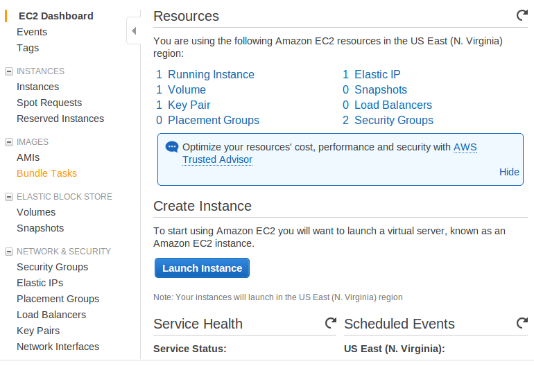
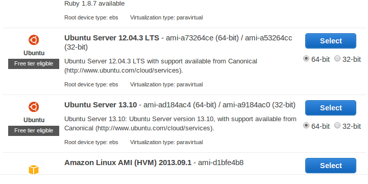
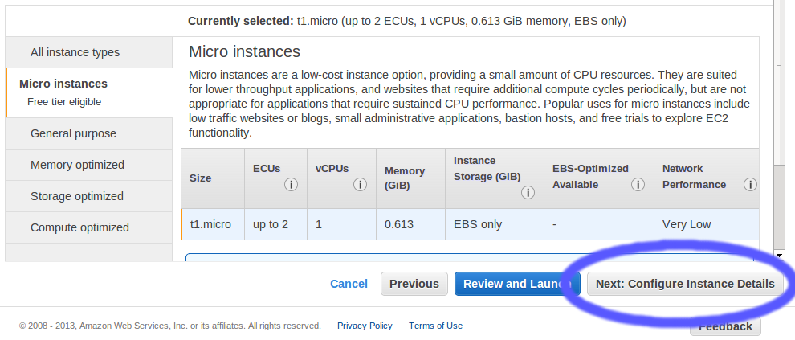
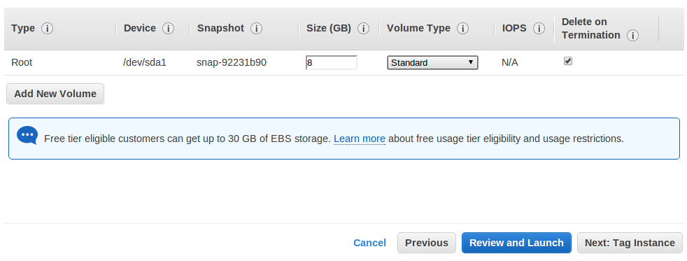
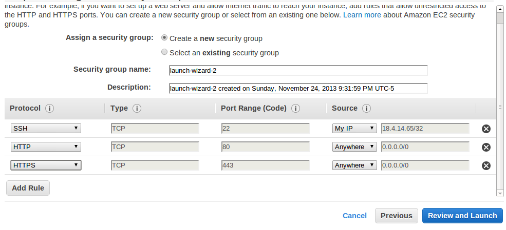
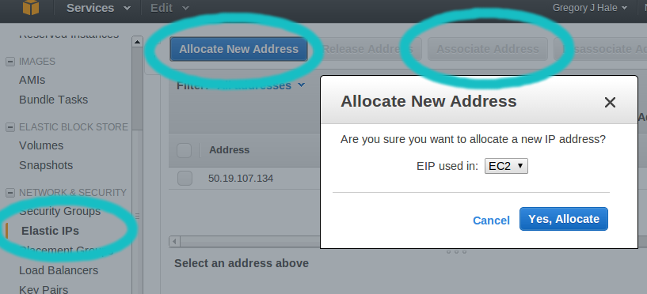
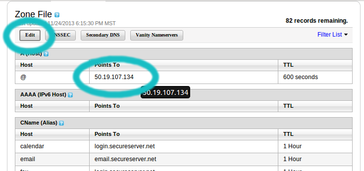

My first Snap site on AWS
I decided it’s finally time to stop imagining and start working, on some of my website ideas. I want a permanent place to host my site, and professional-sounding a domain name, so I went to godaddy.com and searched around for a name for my science-papers reddit clone and my personal blog. Godaddy sure does make it easy to search for and buy available domain names. But (like most companies, I’m sure), you don’t get nearly as many pretty buttons and dead-obvious navigation after you have bought, when you’re doing your administration. Managable with a little googling and patience.
Step 1 - GoDaddy
I simply buy the domains I want. Expect to pay about $40 per domain for two years, if you were like me and frightened into buying the added “Identity Protection” stuff. You can often get promo codes that cut the price in half if you watch the Linux Action Show. Heck you should watch LAS anyway! If you aren’t already a subscriber. They might tell you to use GoDaddy’s website builder. …I wouldn’t do that :) We want to play with Snap.
For the remainder of the steps, you should probably read Amazon’s Guide. I don’t know what I’m doing. But if you want to take a risk, these notes got me up and running with a snap sample that I can access through my GoDaddy domain.
Step 2 - Amazon Web Services
I go to the AWS site and signed in with the same account that I use to order books, then clicked around the front pages until I found the “Free Tier” links. You can try out a small virtual machine (500Mb memory, 8Gb of storage) for a year, for free. Sweet! The same thing looks like it will be about $12/year
Step 3 - New Instance
Find the EC2 dashboard, and click “Launch Instance”

Step 4 - Picking an AWI (pre-built machine image)
Choose the Ubuntu Sever 13.10 64-bit

Step 5 - More configuration
Don’t just click Review and Launch! We want to confifure some instance details. Click the circled button.

Step 6 - Storage
Forgo the nice blue button again and click “Add storage” instead. On the free tier, you can go up to 30 Gb of storage before you start getting charged. I like the default value of 8 Gb - space to install another instance after your first if you want. This is totally enough space for a simple GHC + libraries install. Click “Next: Tag Instance”

Step 7: Security
Now configure the firewall settings. Security group name is just a nickname for your settings. I’ve selected “My IP” as the source for SSH access to my virtual machine, and AWS automatically found out which IP I’m browsing from. This is not the IP that I see through ifconfig because I’m on a VLAN. So I’m glad that they auto-detected me. Clicking “Add Rule” a couple times and selecting HTTP and HTTPS gave me the defaults that you see in the figure. Now go ahead and click “Review and Launch”

Step 8: Key Pairs
You should, after a few seconds, see your Instance State say “running”. Take a minute to celebrate - you have a new computer!
Now, this part is important. You’re going to download a private key to identify you when you log into your virtual machine. The Key pair name you choose in this dialog box will be the filename of the key, so don’t use any spaces. Click Download Key Pair, track down the .pem file and move it somewhere on your drive where you won’t lose it! Now set the permissions like so to avoid having that key messed with by intruders:
chmod 400 /path/to/key.pem
Step 9 - Get a reliable IP address
In the Dashboard, find Elastic IP’s. Click Allocate New Address. The Associate the address with your EC2 instance.

Step 10 - Login and get Haskell!
In the termial (replacing
ssh -i /path/to/key.pem ubuntu@
You won’t be prompted for a password. Go ahead and install the Haskell Platform :)
ubuntu@ip-1-1-1-1:~$ sudo apt-get install haskell-platform
Step 11 - Swap Space & Snap
We’re going to cabal install Snap soon, but trying to build it on this little virtual machine requires more than the 500 Mb of memory we’re given. I followed ajtrichards stackoverflow instructions to add 1 Gb of swap space.
ubuntu@ip-1-1-1-1:~$ sudo /bin/dd if=/dev/zero of=/var/swap.1 bs=1M count=1024 ubuntu@ip-1-1-1-1:~$ sudo /sbin/mkswap /var/swap.1 ubuntu@ip-1-1-1-1:~$ sudo /sbin/swapon /var/swap.1
Let’s also update cabal to 1.18 so we can have sandboxes.
ubuntu@ip-1-1-1-1:~$ cabal update ubuntu@ip-1-1-1-1:~$ cabal install cabal-install ubuntu@ip-1-1-1-1:~$ sudo rm /usr/bin/cabal ubuntu@ip-1-1-1-1:~$ sudo ln -s ~/.cabal/bin/cabal /usr/bin/cabal
Now to get Snap and set up the skeletal app.
ubuntu@ip-1-1-1-1:~$ mkdir mysite ubuntu@ip-1-1-1-1:~$ cd mysite ubuntu@ip-1-1-1-1:~$ cabal install snap ubuntu@ip-1-1-1-1:~$ snap init ubuntu@ip-1-1-1-1:~$ cabal sandbox init ubuntu@ip-1-1-1-1:~$ cabal install --dependencies-only ubuntu@ip-1-1-1-1:~$ cabal install ubuntu@ip-1-1-1-1:~$ sudo .cabal-sandbox/bin/mysite -p 80
And you should be up and running! Put your Elastic IP address into the URL bar of a browser, and you should see the auto-generated Snap login page.
Step 12 - Connect your domain name
At GoDaddy.com, log in and click the ‘Launch’ button of the domain you want to connect. ‘Launch’ here seems to refer to launching the preferences editor, not launching your site necessarily.
Click the DNS Zone File tab,
And this is what you need to change to your Elastic IP
